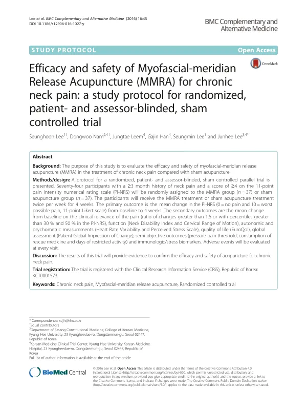

Efficacy and safety of Myofascial-meridian Release Acupuncture (MMRA) for chronic neck pain: a study protocol for randomized, patient- and assessor-blinded, sham controlled trial
Lee S, Nam D, Leem J, Han G, Lee S, Lee J
BMC Complementary and Alternative Medicine 16(1):45

첫 장 · 오픈액세스First page · open access
논문 소개Summary
만성 경항통에 근막경선 이완침을 놓는 무작위 대조시험의 프로토콜입니다. 목통증이 3개월 이상 이어지고 통증 숫자평가척도가 4점 이상인 19세부터 75세까지 74명을 침군과 샴군에 37명씩 나누어 주 2회씩 4주, 모두 여덟 차례 치료합니다. 일차 평가변수는 4주 뒤 통증 척도의 변화이고, 이차로 목장애지수와 경추 가동범위, 심박변이도, 스트레스 척도, 압통역치, 면역·스트레스 생체표지자를 함께 봅니다. 주관적 지표에만 기대지 않으려는 설계입니다. 대조군은 피부를 뚫지 못하는 파크 샴 기기로 비경혈에 득기 없이 놓습니다. 프로토콜이라 결과는 없습니다.
A protocol for a randomised controlled trial of myofascial-meridian release acupuncture in chronic neck pain. Seventy-four adults aged 19 to 75 with neck pain lasting at least three months and a pain intensity numerical rating scale score of 4 or more will be allocated, 37 to each arm, and treated twice weekly for four weeks — eight sessions in all. The primary outcome is change in the pain scale at four weeks; secondary outcomes include the Neck Disability Index, cervical range of motion, heart rate variability, a perceived stress scale, pressure pain threshold, and immunologic and stress biomarkers. The design deliberately avoids resting on subjective measures alone. The control group receives non-penetrating needling at non-acupuncture points using the Park sham device, without deqi. As a protocol it reports no results.
인용Cite
Lee S, Nam D, Leem J, Han G, Lee S, Lee J. Efficacy and safety of Myofascial-meridian Release Acupuncture (MMRA) for chronic neck pain: a study protocol for randomized, patient- and assessor-blinded, sham controlled trial. BMC Complementary and Alternative Medicine. 2016;16(1):45. doi:10.1186/s12906-016-1027-y